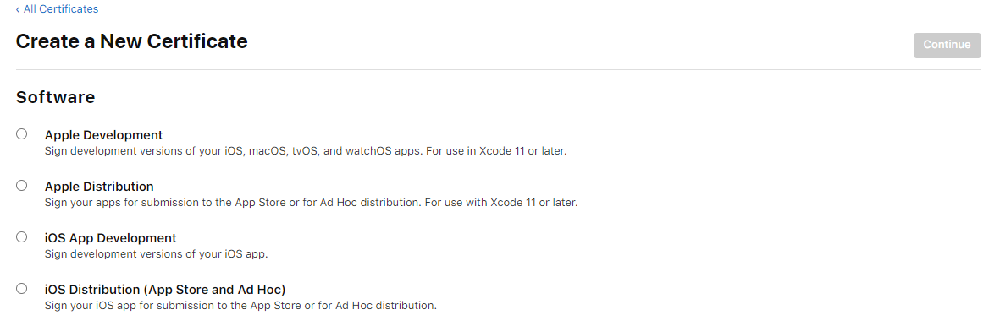

This is a concise tutorial on how to build and upload Unity made iOS apps to the Appstore on Windows. This tutorial does not require an Apple Mac.
Date Created: Jan 2021
Requirements:
- Apple Developer Account -> Required to publish iOS apps
- Unity Cloud Build -> Allows you to build and download .ipa files without Xcode
- OpenSSL -> Used to create the .p12 file REQUIRED to sign your app
- How to use Windows Command Line -> Used for OpenSSL and the ios-uploader tool
If you do NOT have ALL 3 of the above, you will not be able to proceed.
If you don't know what I'm talking about in any part of this tutorial, you should probably do some more research.
1. Finish your app
Just a quick self promo here, I finished my app Magniflyer and if you feel like you need a break from programming, download my app and have some fun.
2. Creating an Apple Provisioning Profile
A quick reminder that you need OpenSSL to do this step. I found this tutorial on how to install it pretty good.
1) Create a key and Certificate Signing Request (CSR)
To create the .key file, run the following command:
openssl genrsa -out YourApp.key 2048
To create the .certSigningRequest file (CSR), run the following command, replacing the filename, email and name details with yours (where AU is your country code):
openssl req -new -key YourApp.key -out YourApp.certSigningRequest -subj "/emailAddress=you@yourdomain.com, CN=Your Name, C=AU"
I reccomend creating a folder to put the files you just made.

2) Use that CSR on the Apple Developer Console to get a .cer certificate

Go to the Apple Developer Console and create a new certificate. Select the type of certificate that applies to you (if you don't know, do some research). After this step, it will ask for your CSR certificate, so make sure you know where it is saved. Finally, download the .cer file and add it to your folder.
3) Create an App ID for your app
Create an App ID for your app on the Apple Developer Console.
I reccomend using reverse domain style format (e.g: com.yourname.yourappname), for Magniflyer, I used "com.timeBenter.Magniflyer", however I recomend not using capitals. You will also need to set this as the bundle id in the Project Settings of your Unity Project.

3.5) Register a device (for Ad Hoc distribution only)
If you chose an Ad Hoc distribution certificate, you must add your phone's id to the devices list. Here is some useful info on how to do that.
4) Use the .cer certificate to create a Provisioning Profile on the Apple Developer Console

Choose the profile you want, but you will only be able to add your certificate to this profile if they are the same type. Then choose the app id, and then choose the certificate you created. Name it, generate it and then download it, adding it to your little folder of files.
5) Use the .cer certificate to create a .p12 certificate
Only two things left todo! Use this command to create a .pem file from the .cer file
openssl x509 -in distribution.cer -inform DER -out YourApp.pem -outform PEM
Enter this command to create the .p12 certificate, it will require you to enter a password. Make sure you remember what that password is as well.
openssl pkcs12 -export -inkey YourApp.key -in YourApp.pem -out YourApp.p12

Finally, you have all the necessary files to proceed to the next step. If you want a better tutorial on how to do this, this website includes more images and is where I learnt how to do the steps above.
3. Setting up Cloud Build
To configure your iOS Cloud Build, you need the following items:
- Your provisioning profile (.mobileprovision)
- Your .p12 file
- The password that you used to protect your .p12 file
I am assuming you already have set up the source control for the Cloud Build's. If not, here and here are links to help you out, or you can just find your own tutorial.

Simply setup a new target in Unity Cloud Build and fill out the info, and then you should be good to start a build.
4. Uploading the build
Assuming the build was successful and you now have the .ipa file, you will need to upload the build to AppstoreConnect.
To do this you will have to use a custom made tool called: ios-uploader. I found this one the best as if you have Node.js you can use npm to install it and add it to your path, and then it is just one command to upload your build (see the github link for more details).

5. Success
Now, after a minute or two, your build should be showing in AppstoreConnect, whether it is for testflight or production.
If you found this helpful, share it to other developers. If you had a problem along the way, just try searching for the answer before you ask anyone, 90% of the time, someone else has had the same problem and found the solution.
Also, if you want to check out my trippy game, Magniflyer, the game that helped me discover how to do all this, download it on iOS or Android.
Trailer